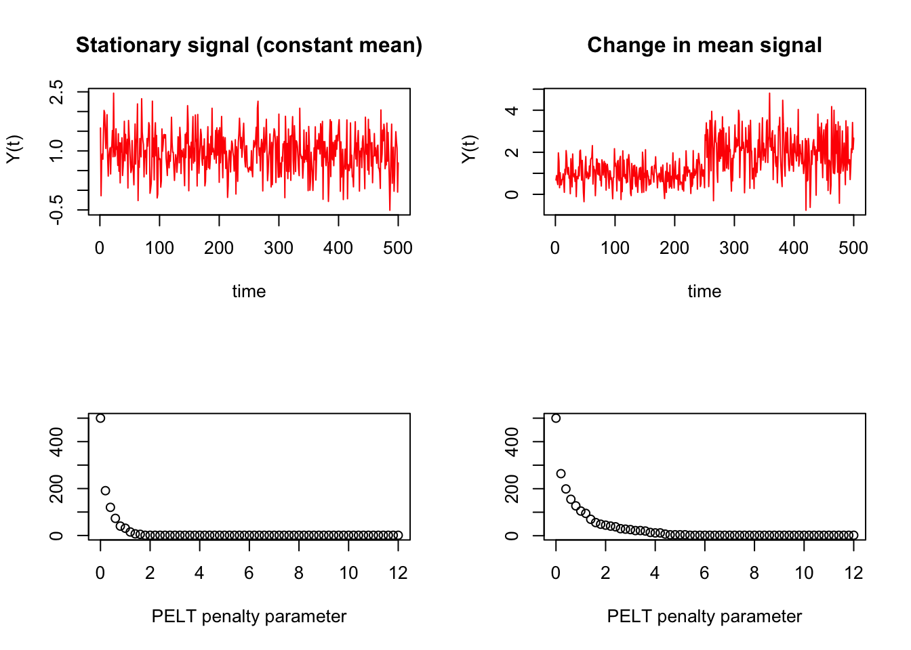

This assignment is based on the Data Analysis Colloquium by Dr. Patrick Brandt who talks about Changepoint Models for policy interventions and change identifications through statistical analysis and time series.
Change point is a technique for locating thresholds in relationships between two variables . It is an analytical technique that seeks to identify a point along a distribution of values where the traits of the values before and after the point are different. It is an an efficient and potent statistical technique for figuring out whether and when a change in a data set has taken place . The tool offers a confidence rating that shows how likely the change is to occur.
Change point can be used to draw meaningful conclusions from the time series data to draw conclusions for policy issues.
For example First, we generate some generic, random signals. We can use these to model random change in car sales as a function of time for the example discussed above. We can make a signal without a change point and a signal with a change in mean at a known time point:
y_ts <-ts(rnorm(500,mean=1,sd=.5)) # random signal without a changepointy_ts_CP <-ts(c(rnorm(250,mean=1,sd=.5), rnorm(250,mean=2,sd=1))) # rand signal w\ changepointoptions(warn=-1)library(changepoint)
Loading required package: zoo
Attaching package: 'zoo'
The following objects are masked from 'package:base':
as.Date, as.Date.numeric
Successfully loaded changepoint package version 2.2.4
See NEWS for details of changes.
cptfn <-function(data, pen) { ans <-cpt.mean(data, test.stat="Normal", method ="PELT", penalty ="Manual", pen.value = pen) length(cpts(ans)) +1}# evaluate and plot results:plot.new()frame()par(mfcol=c(2,2))# run cptfn for the signal with a known change pointpen.vals <-seq(0, 12,.2)elbowplotData <-unlist(lapply(pen.vals, function(p) cptfn(data = y_ts, pen = p)))plot.ts(y_ts,type='l',col='red',xlab ="time",ylab =" Y(t)",main ="Stationary signal (constant mean)")plot(pen.vals,elbowplotData, xlab ="PELT penalty parameter",ylab =" ",main =" ")# run cptfn for the signal with a known change pointelbowplotData <-unlist(lapply(pen.vals, function(p) cptfn(data = y_ts_CP, pen = p)))plot.ts(y_ts_CP,type='l',col='red',xlab ="time",ylab =" Y(t)",main ="Change in mean signal")plot(pen.vals,elbowplotData,xlab ="PELT penalty parameter",ylab =" ",main =" ")

Second, we need to identify penalty parameters for the algorithm we will use for testing changepoint detection against. For this example, we will be using the PELT algorithm. We can do this by making ‘elbow plots’ and using the penalty parameter value at the elbow. We will define a function cptfn for running through a sequence of different penalty parameters, then plot for each time series:
options(warn=-1)library(changepoint)penalty.val <-8# this value is determined from elbow plotscptm_stationary <-cpt.mean(y_ts, penalty='Manual',pen.value=penalty.val,method='PELT') cpts_stationary <-cpts(cptm_stationary) # change point time pointscptm_CP <-cpt.mean(y_ts_CP, penalty='Manual',pen.value=penalty.val,method='PELT') cpts_CP <-cpts(cptm_CP) # change point time pointscpts_CP
[1] 250
From the elbow plots, specifically the bottom right plot, we can see that a penalty parameter value (penalty.val) of approximately 8 should be sufficient to avoid spurious change point detection. So we can apply the changepoint mean function (cpt.mean) to our time series signals using a penalty paramter value of 3 and see if we can identify correctly where the change point occurs.
plot.new()frame()par(mfcol=c(1,2))plot(cptm_stationary,xlab ="time",ylab =" Y(t)",main ="Change in mean signal")plot(cptm_CP)